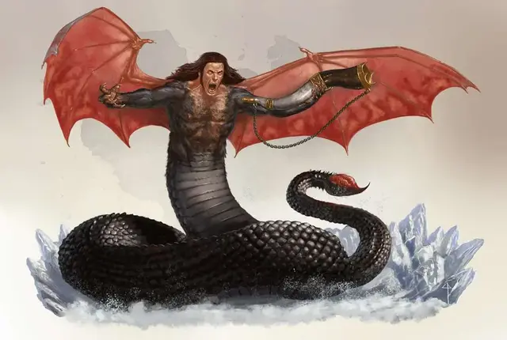

Герион
Geryon
Огромное Исчадие (Дьявол), законно-злое, именной НИП

Класс Доспеха 19 (природный доспех)
Хиты 300 (24к12 + 144)
Скорость 30 футов, летая 50 футов
| мод | спас | ||
|---|---|---|---|
| СИЛ | 29 | +9 | +9 |
| ЛОВ | 17 | +3 | +10 |
| ТЕЛ | 22 | +6 | +13 |
| мод | спас | ||
|---|---|---|---|
| ИНТ | 19 | +4 | +4 |
| МДР | 16 | +3 | +10 |
| ХАР | 23 | +6 | +13 |
Навыки Восприятие +10, Запугивание +13, Обман +13
Сопротивление урону дробящий, колющий, рубящий от немагических атак, кроме нанесённых посеребрённым оружием
Иммунитет к урону огонь, холод, яд
Иммунитет к состояниям отравление, очарование, испуг, истощение
Чувства истинное зрение 120 футов, пассивное Восприятие 20
Языки Все, Телепатия 120 фт.
Опасность 22 (41000 опыта)
Бонус мастерства +7
Особенности
Легендарное сопротивление (3/день). Если Герион проваливает спасбросок, он может вместо этого сделать спасбросок успешным.
Сопротивление магии. Герион совершает с преимуществом спасброски от заклинаний и прочих магических эффектов.
Регенерация. Герион восстанавливает 20 хитов в начале своего хода. Если он получает урон излучением, эта особенность не подействует в начале следующего хода Гериона. Герион умирает только если начнёт свой ход с 0 хитами и не может регенерировать.
вариант: протрУбить в рог. Герион может использовать действие, которое позволяет ему призвать порабощённых минотавров.
Протрубить в рог (1/день). Герион дует в свой рог, который призывает 5к4 минотавров [minotaur] рядом в свободном пространстве в пределах 600 фт. от себя. Минотавры совершают бросок инициативы, когда появляются и остаются пока не умрут, или пока Герион не использует действие, чтобы отпустить их всех.
Культ Гериона. Герион наделяет своих культистов особыми способностями. Члены его культа могут получить способность «Сокрушительный удар». Предводители культа могут также получить способность «Неукротимая сила».
Сокрушительный удар (перезаряжается после короткого или продолжительного отдыха). Бонусным действием существо получает бонус к урону, нанесённому следующей рукопашной атакой, совершённой в течение следующей минуты. Бонус равен модификатору Силы существа (минимум +1).
Несгибаемая сила (перезарядка 5-6). Если существо получает урон, то, потратив реакцию, оно может бросить к10 и вычесть из урона выпавшее число.
Действия
Мультиатака. Герион совершает одну атаку когтями и одну жалом.
Когти. Рукопашная атака оружием: +16 к попаданию, досягаемость 15 фт., одна цель. Попадание: 23 (4к6 + 9) урона холодом. Если цель Большого размера или меньше, то она схвачена (Сл высвобождения 24) и пока существо схвачено, оно опутано. Герион может схватить одно существо. Если цель уже схвачено Герионом, то цель получает дополнительный 27 (6к8) урона холодом.
Жало. Рукопашная атака оружием: +16 к попаданию, досягаемость 20 фт., одно существо. Попадание: 14 (2к4 + 9) урона силовым полем, и цель должна успешно пройти спасбросок Телосложения Сл 21, иначе получит 13 (2к12) урона ядом и станет отравленной, пока не окончит короткий или продолжительный отдых. Максимум хитов цели уменьшается на количество полученного урона ядом. Если этот эффект уменьшает максимальное значение хитов существа до 0, это существо умирает. Уменьшение длится до тех пор, пока не пропадёт состояние отравленный.
Использование заклинаний. Герион накладывает одно из следующих заклинаний, используя Харизму в качестве базовой характеристики (Сл спасброска от заклинаний 21):
• Неограниченно: смена обличья [alter self] (может стать Среднего размера при изменении внешности), обнаружение магии [detect magic], град [ice storm], невидимость [invisibility] (только на себе), поиск предмета [locate object], внушение [suggestion], ледяная стена [wall of ice];
• 1/день каждое: изгнание [banishment].
Телепортация. Герион магическим образом телепортируется вместе со всем несомым и носимым снаряжением, на расстояние до 120 фт. в свободное пространство, которое он видит.
Легендарные действия
Герион может совершить 3 легендарных действия, выбирая из представленных ниже вариантов. За один раз можно использовать только одно легендарное действие, и только в конце хода другого существа. Герион восстанавливает использованные легендарные действия в начале своего хода.
Инфернальный взгляд. Герион нацеливается на одно существо, которое он видит в пределах 60 фт. от себя. Если цель видит гериона, она должна преуспеть в спасброске Мудрости Сл 23, иначе станет испуганной герионом до конца следующего хода Гериона.
Быстрое жало (стоит 2 действия). Герион совершает атаку Жалом.
Телепортация. Герион использует своё действие Телепортация.
Логово
Герион недавно восстановил свою древнюю крепость, Холодную Сталь [Coldsteel], разрастающийся комплекс, который поднимается изо льда и снега в центре Стигии. Он бродит по коридорам этого места, раскидывая в стороны ледяных дьяволов и рабов-минотавров, которых он взял у Бафомета, находясь в ярости от предательства Асмодея, изрыгая клятвы мести и вынашивая безумные планы того, как он вернёт себе своё положение у Левистуса.
Действия логова
При значении инициативы «20» (в случае ничьей проигрывает всем конкурентам), Герион совершает действие логова, чтобы вызвать один из следующих эффектов; Герион не может использовать один и тот же эффект два раунда подряд:
• Леденящий взрыв. Герион создаёт взрыв стужи из-под земли в точке, которую он видит в пределах 120 фт. от себя. Стужа приобретает форму куба в центре этой точки по 10 фт. на каждой стороне. Каждое существо, находящееся в зоне куба, должно преуспеть в спасброски Телосложения Сл 21, иначе получит 28 (8к6) урона холодом.
• Опутывание ненавистью. Герион нацеливается на одно существо, которое он может видеть в пределах 60 фт. от себя. Цель должна преуспеть в спасброске Мудрости Сл 21, иначе получит состояние опутанный на 1 минуту. Цель может завершить на себе этот эффект, если нанесёт урон одному или более из своих союзников.
• Изгнание. Герион накладывает заклинание изгнание [banishment].
Местные эффекты
Местность, в которой есть логово Гериона, искажается его магией, которая создаёт один или несколько следующих эффектов:
• Адские врата. Разумные существа в пределах 1 мили от логова Гериона склонны часто видеть мерцающие порталы, ведущие в места, которые они считают безопасными. Вход через портал всегда перемещает путника куда-нибудь в Стигию.
• Леденящие ветра. Вокруг логова в пределах 1 мили воют сильные морозные ветра.
• Изнуряющие крики. Вой и крики слышны в пределах 1 мили от логова. Любое существо, что заканчивает короткий или продолжительный отдых в пределах этого расстояния должно преуспеть в спасброске Мудрости Сл 21, иначе не получит никакого преимущества от отдыха.
Если Герион умрёт, эти эффекты исчезнут в течении 1к10 дней.
Описание
Герион ведёт нескончаемую борьбу с Левистусом за контроль над Стигией. Оба уже веками сражаются друг с другом, вытесняя друг друга неисчислимое количество раз. В данный момент, Герион находится в выгодном положении в инфернальной иерархии. Хоть Левистус всё ещё правит над Стигией, он заточён в громадной глыбе льда по приказу Асмодея. В свою очередь, Герион мобилизует своих сторонников и строит коварные планы, чтобы подменить своего ненавистного соперника.
Среди архидьяволов, Герион известен благодаря своему боевому мастерству. Он — свирепый охотник и упорный следопыт. Прочие дьяволы владеют легионами и отправляют своих последователей в бой против своих врагов, а Герион любит чувствовать плоть и сталь под своими когтями и вкушает кровь своих побеждённых врагов. Его свирепость хорошо служит ему в ледяных пустошах Стигии, но также ограничивает его способность собирать души и укреплять эффективную иерархию. Мудрецы, исследующие Девять Преисподней, полагают, что битва за контроль над Стигией — всего лишь испытание, которое устроил Асмодей в надежде избавиться от наихудших побуждений Гериона и Левистуса, или с целью найти более подходящего кандидата вместо этих двоих.